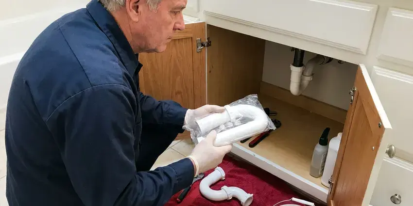

Sink Installation in Menifee, CA
Upgrade your home with a professionally installed sink. Our team in Menifee, CA ensures a perfect fit and leak-free operation.
- Licensed and Insured Plumbers
- Prompt, Reliable Service
- All Sink Styles Installed
- Skilled Plumbers
Ready for a New Bathroom Sink? Book Your Install in Menifee, CA.
Our team is ready to help with your next sink installation project, big or small.
Professional Sink Installation Services in Menifee, CA
FKM Plumbing installs bathroom sinks the way they should be, level, fully supported and connected to a properly vented trap. We remove the old basin, check the drain arm height and shutoff valves, and set the new sink with the correct sealant for its material. The result is a clean install that looks good and stays leak-free.
Our expertise includes:
- Pedestal, drop-in, and undermount sinks
- Garbage disposal and faucet hookups
- Kitchen and bathroom sink installs

Additional Bathroom Plumbing Services in Menifee, CA
From toilets to showers, our bathroom plumbing team in Menifee, CA handles repairs, installs, and upgrades with tidy, code-compliant work.


Customers
Why Choose FKM Plumbing for Sink Installation in Menifee, CA?
Choosing FKM Plumbing for your sink installation means you are getting first-rate plumbing expertise from a local company. We focus on durable solutions that stand up to the demands of Menifee homes.
- Code Compliance, We carefully follow all Southern California plumbing codes for safe and compliant installations, including proper drainage and venting.
- Transparent Pricing, You will receive a straight, upfront quote with no hidden fees for your sink installation project.
- Water Hardness, Our installations account for the water conditions in Menifee, using sealants and connections that resist mineral buildup.
Citywide Coverage
No matter where you are located in Menifee, our skilled plumbers are just a call away. We make sure to bring all necessary tools and parts to complete your sink installation quickly and correctly the first time.
Experienced Team
Our team of licensed plumbers has years of hands-on experience installing all types of sinks, from heavy cast iron to delicate ceramic. They are trained in the latest installation techniques and work with precision.
Safety-First Approach
Our careful approach prevents common issues like leaks, water damage, and improper drainage, safeguarding your home's integrity and your family's health.
Trusted Certified Menifee Plumbing Services Professionals
At FKM Plumbing, we take pride in providing certified plumbing services throughout Menifee, CA. Backed by leading industry credentials, our experienced plumbers combine technical skill with genuine customer care. Whether it is repair, installation, or maintenance, we follow strict safety and quality standards to deliver lasting results you can trust.
Call Us Now PHCC Plumbing Contractor Recognition
PHCC Plumbing Contractor Recognition Better Business Bureau (BBB) Accreditation
Better Business Bureau (BBB) Accreditation Angi Certified Pro
Angi Certified Pro ISO 9001 Quality Management Certification
ISO 9001 Quality Management CertificationExpert Sink Installation Services in Menifee, CA
Vessel Sink Installation in Menifee, CA
Vessel sinks sit on top of the counter, which changes the drain height and faucet requirements. We install the mounting ring, set the bowl level, and use a vessel-specific drain with or without an overflow as the basin calls for. We also confirm your faucet is a tall or wall-mount model that reaches past the rim. The trap arm is adjusted so everything lines up under the counter.

Sink Installation Cost Factors in Menifee, CA
A simple drop-in swap costs much less than a new undermount on stone or a vessel sink that needs a drain relocation. Moving the drain, adding a second sink or replacing old galvanized stubs adds labor. We price the plumbing separately from the countertop so you can compare. You will know the full installed cost before we start.
Bathroom Sink Installation in Menifee, CA
Upgrading your bathroom often starts with a new sink. We handle installations for pedestal sinks, vessel sinks, console sinks, and integrated vanity sinks. Our plumbers make sure the new sink fits perfectly with your vanity or wall mounting, providing secure fastenings and precise plumbing connections. We pay close attention to drain assembly and faucet integration, making sure everything is sealed and functions properly, which is especially important in humid bathrooms.
Leak-Proof Sink Connections in Menifee, CA
The most important part of any sink installation is making sure all connections are leak-proof. Our plumbers use high-quality sealants, proper pipe dope, and correct torque on all fittings to prevent drips and leaks. We run thorough water pressure tests after every installation to confirm watertight integrity. This attention to detail protects your cabinets and floors and extends the life of your new sink in Menifee, CA.
Pedestal Sink Installation in Menifee, CA
Pedestal sinks are popular for their classic look and space-saving design, but their installation can be challenging due to the exposed plumbing. Our plumbers ensure the drain and supply lines are perfectly aligned within the pedestal column and securely anchored to the wall. This prevents wobbling and ensures all connections hidden and watertight. We handle the delicate nature of ceramic pedestals with care, providing a stable and attractive fixture for your home in Menifee, CA.
Utility Sink Installation in Menifee
Utility sinks in laundry rooms, garages, or workshops need to be robust and correctly installed to handle heavy use. FKM Plumbing installs durable utility sinks, providing strong support for the basin and proper drainage for large volumes of water. Municipal water across much of Southern California is hard, leaving chalky scale on faucets, showerheads, and inside water heater tanks. We plan for that with sturdy connections and P-traps that can be easily maintained.
Faucet & Disposal Integration in Menifee, CA
Often, a new sink installation goes hand-in-hand with a new faucet and garbage disposal. We expertly integrate these components, ensuring all connections are compatible and functioning correctly. From single-handle pull-down faucets to touchless models and powerful disposals, we make sure everything is installed at the same time as your new sink. This combined service saves you time and means all parts work together smoothly in your Menifee, CA home.

Double Vanity Sink Installation in Menifee
Adding a second sink means adding a second drain and two more supply lines. We extend the drain with a properly sized fitting, install new stops, and make sure both bowls drain freely without siphoning each other's traps. When the wall needs to be opened, we tell you up front. A double vanity is one of the most requested upgrades in primary bathrooms.
Local Sink Installation Near Me in Menifee, CA
When you search for 'sink installation near me' in Menifee, CA, FKM Plumbing is your trusted local expert. We are very familiar with the plumbing throughout the area, from older homes with galvanized pipes to new constructions with PEX and copper.
Finding a plumber who installs sinks carefully can make or break a bathroom update. Our team works in Menifee every week and can fit your install around countertop and cabinet deliveries. We arrive with the drains and valves your sink calls for.
FKM Plumbing at a Glance
- Fully licensed plumbing team covering Menifee, CA
- 24/7 emergency service with same-day scheduling
- Clear written estimates, no hidden fees
- 4.8-star rated by 754+ Southern California customers
Menifee Map
Menifee Information
- Population
- 113,433
- Area codes
- 951/760/909
- Service area
- Menifee and communities within 40 miles
- Nearby
- Perris, Murrieta, Lake Elsinore, Hemet
Proper sink installation is crucial in Menifee, CA homes to prevent water damage to cabinets and floors. Copper pinhole leaks and corroded cast iron drains are frequent repair calls in homes that are now several decades old.
Expert Services
Trust our professionals for reliable FKM Plumbing solutions in Menifee, CA.
Our Specialized Plumbing Services in Menifee, CA
At FKM Plumbing, we provide a complete range of plumbing services across Menifee, CA. From leak detection to full system installations, our team ensures fast, precise, and affordable service for both residential and commercial properties. Explore our core services below:


The Way Our Sink Installation Process Works in Menifee, CA
Our sink installation process is designed for clarity and efficiency, providing a hassle-free experience for our Menifee customers.
Request a Quote
Call (213) 871-0701 with your sink style or model number. We confirm the scope and give you a clear installed price.
Prep and Remove
We shut off the water, remove the old sink and inspect the drain and valves. Any old stops or stubs that will not hold are swapped out.
Install and Test
We set the new sink, connect the drain and supplies, and fill the bowl to test. Then we clean the area and walk you through the finished job.
Frequently Asked Questions About Sink Installation in Menifee
The cost for sink installation in Menifee, CA typically ranges from $200 to $600 for labor alone, depending on the sink type (for example, drop-in vs. undermount), complexity, and if any modifications to existing plumbing or countertops are needed. This does not include the cost of the sink itself. We provide a detailed, upfront quote after an on-site assessment.
Most standard sink installations can be completed within 2 to 4 hours, assuming no major plumbing modifications are required. More complex installations, such as those requiring new water lines or drain rerouting, might take longer. We will give you an estimated timeframe during our first assessment.
Absolutely. If your new sink is compatible, we can easily install a new garbage disposal unit as part of the installation process. We provide proper electrical connections, secure mounting, and correct drainage, making sure your kitchen plumbing is fully functional.
Signs you may need a new sink include extensive cracking or chipping, widespread rust, persistent leaks that cannot be sealed, significant water damage around the sink basin, or if you are upgrading your home's look. Small leaks or minor clogs can often be repaired, but widespread damage generally warrants replacement.
Yes, FKM Plumbing stands behind the quality of our workmanship. We offer a warranty on all our sink installation services, covering any issues that may arise due to our installation. Specific warranty details will be provided at the time of service, giving you peace of mind.
FKM Plumbing stands behind our work with a full labor warranty on all sink installations. This covers any issues directly related to our installation for a specified period. The warranty on the sink fixture itself will be provided by the manufacturer. We will explain all warranty details before starting any work.
Generally, replacing an existing sink with a similar type does not require a permit in Menifee, CA. However, if the installation involves relocating plumbing lines, adding new lines, or significant structural changes, a permit might be necessary. We will let you know if your project requires one and can assist with the permit application process.
We strongly recommend it if the valves are old multi-turn stops. Mineral buildup often seizes them, and a fresh quarter-turn valve costs little compared to a leak.
What People Are Saying About Our Plumbing Experts?

Emily R.
I called FKM Plumbing for plumbing repair, and the technician was fast, polite, and thorough. They explained the problem clearly and fixed it the same day. I will definitely hire them again. Highly recommended!
Plumbing Repair · Lake Elsinore, CA
Laura S.
I scheduled a water heater replacement, and the team made the process smooth and affordable. The new unit works perfectly, and they cleaned up after completing the job.
Water Heater Replacement · Lake Elsinore, CA
Robert G.
The trenchless sewer replacement saved our front yard. They walked us through the camera inspection footage first so we knew exactly what we were paying for.
Sewer Line Replacement · Menifee, CA
Patricia H.
We had a slab leak that two other companies could not find. FKM Plumbing located it in under an hour, explained our options, and the price matched the quote to the dollar.
Slab Leak Repair · Menifee, CAJames P.
Our commercial plumbing system had a leak under the sink, and FKM Plumbing handled it professionally. The plumbers arrived quickly and restored everything without disruption to our customers.
Commercial Plumbing · Menifee, CASofia M.
Two new toilets installed in one visit, no mess left behind, and the tech even adjusted a faucet he noticed was dripping. Fair pricing and really friendly.
Toilet Installation · Hemet, CA